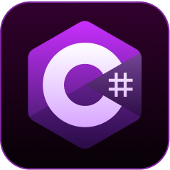

Home
About
Projects
Contact
About Me
I’m Ethan John. I’m an ardent
full-stack developer
, and my expertise lies in the creation of
dynamic web-applications
. My ability to adapt to different technologies allows me to
swiftly tackle problems with
efficiency
.
